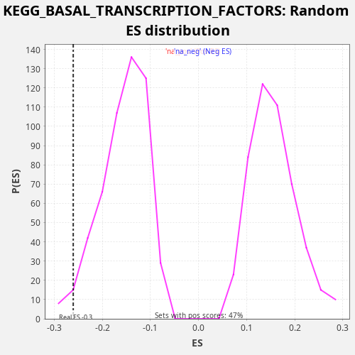

Profile of the Running ES Score & Positions of GeneSet Members on the Rank Ordered List
The same image in compressed SVG format
| Dataset | CCLE |
| Phenotype | NoPhenotypeAvailable |
| Upregulated in class | na_neg |
| GeneSet | KEGG_BASAL_TRANSCRIPTION_FACTORS |
| Enrichment Score (ES) | -0.26035208 |
| Normalized Enrichment Score (NES) | -1.6813133 |
| Nominal p-value | 0.028409092 |
| FDR q-value | 0.16888064 |
| FWER p-Value | 0.905 |
| SYMBOL | RANK IN GENE LIST | RANK METRIC SCORE | RUNNING ES | CORE ENRICHMENT | |
|---|---|---|---|---|---|
| 1 | GTF2H4 | 2598 | 0.000 | -0.0898 | No |
| 2 | TAF7L | 6196 | 0.000 | -0.2270 | Yes |
| 3 | STON1 | 6385 | 0.000 | -0.2026 | Yes |
| 4 | TAF13 | 6654 | 0.000 | -0.1820 | Yes |
| 5 | TAF1 | 6972 | 0.000 | -0.1637 | Yes |
| 6 | GTF2IRD1 | 7033 | 0.000 | -0.1332 | Yes |
| 7 | TAF11 | 7146 | 0.000 | -0.1052 | Yes |
| 8 | GTF2A2 | 7150 | 0.000 | -0.0720 | Yes |
| 9 | TAF9B | 7581 | 0.000 | -0.0590 | Yes |
| 10 | GTF2B | 8249 | 0.000 | -0.0573 | Yes |
| 11 | TAF2 | 8324 | 0.000 | -0.0275 | Yes |
| 12 | GTF2H3 | 8729 | 0.000 | -0.0133 | Yes |
| 13 | TAF5L | 9023 | 0.000 | 0.0062 | Yes |
| 14 | TAF6L | 9340 | 0.000 | 0.0245 | Yes |
| 15 | GTF2H1 | 9878 | 0.000 | 0.0324 | Yes |
| 16 | TAF10 | 9892 | 0.000 | 0.0651 | Yes |
| 17 | TAF7 | 10007 | 0.000 | 0.0930 | Yes |
| 18 | GTF2F1 | 10246 | 0.000 | 0.1151 | Yes |
| 19 | TAF12 | 11731 | -0.000 | 0.0781 | Yes |
| 20 | GTF2E2 | 12356 | -0.000 | 0.0818 | Yes |
| 21 | TAF4B | 12773 | -0.000 | 0.0954 | Yes |
| 22 | TBP | 13072 | -0.000 | 0.1146 | Yes |
| 23 | TBPL1 | 13354 | -0.000 | 0.1346 | Yes |
| 24 | GTF2A1 | 13428 | -0.000 | 0.1645 | Yes |
| 25 | GTF2F2 | 14291 | -0.000 | 0.1570 | Yes |
| 26 | GTF2E1 | 14919 | -0.000 | 0.1606 | Yes |
| 27 | TAF4 | 15468 | -0.000 | 0.1679 | Yes |
| 28 | TAF5 | 18169 | -0.000 | 0.0733 | Yes |
| 29 | TAF6 | 18923 | -0.000 | 0.0709 | Yes |
| 30 | GTF2H2 | 19124 | -0.000 | 0.0948 | Yes |

{kind=link}
{kind=link}